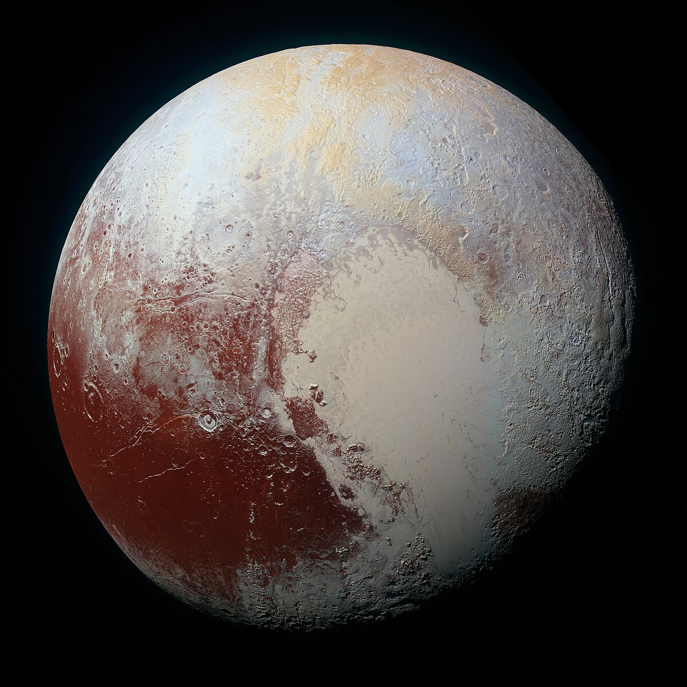

|  |
|
Plutón fue descubierto en el año 1930 y su nombre fue dado por una niña de 11 años, un hecho único hasta la actualidad, según define la Agencia Espacial Norteamericana, (NASA por sus siglas en inglés). El sistema solar fue durante muchos años conformado por 9 planetas y Plutón era uno de ellos. Sin embargo, NASA explica que fue reclasificado como un "planeta enano" luego de que en el lejano Cinturón de Kuiper (también llamado objetos transneptunianos o plutoides) se hallaran mundos muy similares y aún más profundos. Por lo que pasó a ser un integrante de dicho Cinturón que orbita más allá de Neptuno. Se encuentra ubicado aproximadamente a 5900 millones de kilómetros del Sol y debido a eso su temperatura aproximada ronda los -232°, lo que significa que no sería habitable. Su atmósfera tiene diversos componentes como: metano, nitrógeno y monóxido de carbono. |